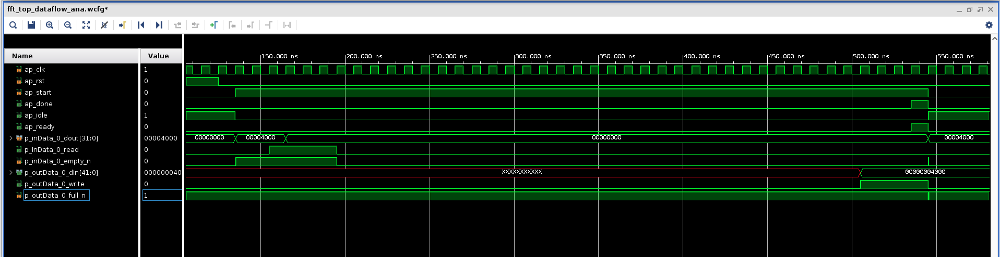
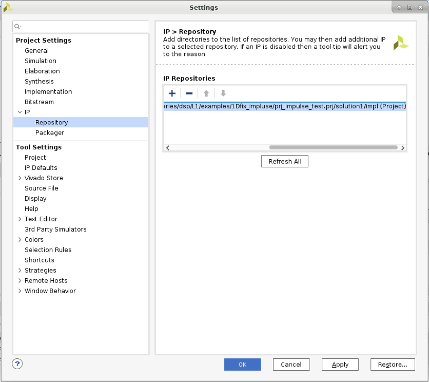
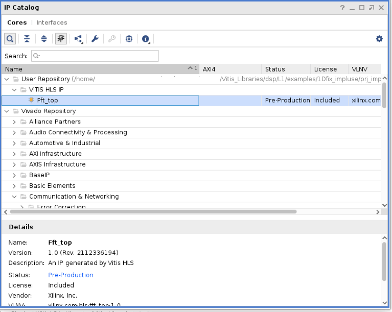
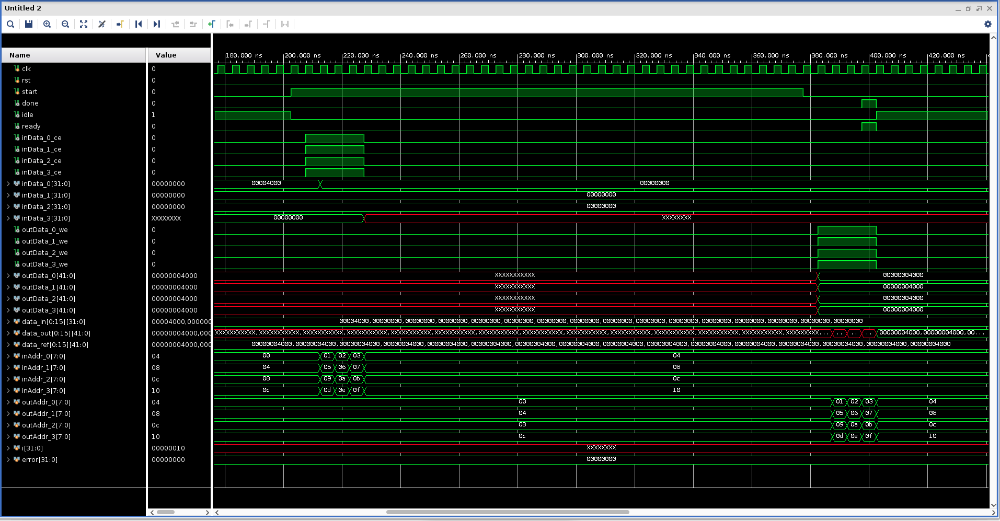

Vitis™ アプリケーション アクセラレーション チュートリアル |
Vitis ライブラリ入門¶
バージョン: Vitis 2022.1
このチュートリアルでは、Vitis ライブラリを使用して独自のデザインを構築する方法について説明します。ここでは、FFT の L1 ライブラリをサンプルとして使用します。ライブラリのコピーから、それ自体のコンパイルおよびシミュレーション、最上位デザインへのインスタンシエートまでの説明が含まれています。
開始前の確認事項¶
環境のセットアップ¶
ライブラリを使用し始める前に、まず Vitis 環境をセットアップする必要があります。Vitis 環境をセットアップする方法は、Vitis オンライン資料を参照してください。Vitis および XRT をセットアップするためのスクリプト例は、次のとおりです。
$ source <Vitis Tool Installation Path>/Vitis/2022.1/settings64.sh
$ source /opt/xilinx/xrt/setup.sh
$ export PLATFORM_REPO_PATHS=<Platform Installation Path>
Vitis ライブラリの取得¶
次に、Vitis ライブラリをローカル パスにコピーする必要があります。
Vitis ライブラリはオープンソースで、ザイリンクス GitHub (https://github.com/Xilinx/Vitis_Libraries) にあります。
作業ディレクトリとして $/home/project$ を使用している場合は、次のコマンドを使用して Vitis ライブラリ リポジトリを作業ディレクトリにコピーします。
Vitis_Libraries/
├── Jenkinsfile
├── LICENSE.txt
├── README.md
├── blas/
├── codec/
├── data_analytics/
├── data_compression/
├── database/
├── dsp/
├── genomics/
├── graph/
├── hpc/
├── quantitative_finance/
├── security/
├── solver/
├── sparse/
├── utils/
└── vision/
ダウンロードは、ネットワークによって数秒から数分かかります。完了したら、サブフォルダーを参照してファイル構造を確認できます。
Vitis_Libraries/ ├── Jenkinsfile ├── LICENSE.txt ├── README.md ├── blas/ ├── codec/ ├── data_analytics/ ├── data_compression/ ├── database/ ├── dsp/ ├── genomics/ ├── graph/ ├── hpc/ ├── quantitative_finance/ ├── security/ ├── solver/ ├── sparse/ ├── utils/ └── vision/最上位フォルダーにはさまざまなライブラリ カテゴリがあります。この演習では、dsp ライブラリを使用します。サブディレクトリ dsp に入ると、次のようなディレクトリ構造になっています。
dsp/
├── Jenkinsfile
├── L1/
│ ├── README.md
│ ├── examples/
│ ├── include/
│ ├── meta/
│ ├── src/
│ └── tests/
├── L2/
│ ├── README.md
│ ├── benchmarks/
│ ├── examples/
│ ├── include/
│ ├── meta/
│ └── tests/
├── LICENSE.txt
├── README.md
├── docs/
│ ├── Doxyfile
│ ├── Makefile
│ ├── Makefile.sphinx
│ ├── README.md
│ └── src/
├── ext/
│ ├── README.md
│ ├── make_utility/
│ └── xcl2/
└── library.json
このライブラリは C++ で記述されており、3 つのレベルのアブストラクションが含まれています。
L1: モジュール レベル。コア LZ ベースおよびデータ圧縮特定 (LZ4 圧縮や Snappy 圧縮など) のモジュールの最適化されたハードウェア インプリメンテーションを提供します。
L2: カーネル レベル。LZ4、Snappy、zlib、および Zstd データ圧縮アルゴリズムのデモが、最適化されたハードウェア モジュールを内部で使用するカーネルによって表示されます。
L3: ソフトウェア API レベル。ビルド済みバイナリ (オーバーレイ) を使用したアクセラレーションのオフロードの詳細をラップし、ユーザーがハードウェア開発なしに Alveo カードでデータ圧縮タスクをアクセラレーションできるようにします。
チュートリアルの実行¶
HLS プロジェクトの作成および実行¶
この手順では、L1 Vitis dsp ライブラリの 1Dfix_impluse サンプルに含まれているファイルを使用して HLS プロジェクトを作成します。ソース ファイルおよびスクリプト ファイルはすべてこのフォルダーにあります。ここでは、Vitis ライブラリが /home/project/Vitis_Libraries ディレクトリにコピーされているものとします。
/home/project/Vitis_libraries/dsp/L1/examples/1Dfix_impluseフォルダーに移動し、下のコマンドを実行して HLS プロジェクトを作成します。
make run CSIM=1 CSYNTH=1 COSIM=1 XPART=xcvu9p-flgc2104-2-e
このコマンドを実行すると、プロジェクト作成、C 合成、C シミュレーション、および協調シミュレーション フローが実行されます。パラメーターを変更すると、特定の手順をスキップできます。ここでは、例として xcvu9p デバイスが使用されていますが、ほかの FPGA デバイスに変更できます。または、キーワード DEVICE を使用してアクセラレーション プラットフォーム (u250 Alveo プラットフォームなど) を指定できます。フローの最後で、[Console] ビューに入力および出力データ値が出力され、シミュレーションの最後に PASS が表示されます。
...
===============================================================
--Input Impulse:
(1,0)
(0,0)
(0,0)
(0,0)
(0,0)
(0,0)
(0,0)
(0,0)
(0,0)
(0,0)
(0,0)
(0,0)
(0,0)
(0,0)
(0,0)
(0,0)
===============================================================
===============================================================
--Output Step fuction:
(1,0)
(1,0)
(1,0)
(1,0)
(1,0)
(1,0)
(1,0)
(1,0)
(1,0)
(1,0)
(1,0)
(1,0)
(1,0)
(1,0)
(1,0)
(1,0)
===============================================================
INFO: [COSIM 212-1000] *** C/RTL co-simulation finished: PASS ***
...
テストベンチでは、FFT への入力としてシングル パルス信号が使用されるため、出力はステップ信号になるはずです。これは、画面に出力される値からわかります。
Vitis HLS GUI でプロジェクトを開きます。次のコマンドを
/home/project/Vitis_libraries/dsp/L1/examples/1Dfix_impluseディレクトリで実行します。
vitis_hls -p prj_impulse_test.prj &
ソース ファイル、合成レポート、または波形ビューアーは、[Explorer] ビューおよび Flow Navigator から選択して参照できます。
top_module.cpp により FFT ライブラリが呼び出され、パラメーターが data_path.hpp ファイルで定義されます。FFT ライブラリを使用する方法の詳細は、Vitis ライブラリの github.io ページを参照してください。
HLS プロジェクトに IP をエクスポートします。
ライブラリ IP が正しく機能していることを確認したので、Vivado IP にそれをエクスポートします。これを実行するには、Flow Navigator で [IMPLEMENTATION] → Export RTL をクリックします。ポップアップ ウィンドウで、設定をすべてそのまま使用し、OK をクリックして IP をエクスポートします。既定では、IP は <project folder>/solutionN/impl にエクスポートされます。ここでは次のディレクトリになります。
/home/project/Vitis_Libraries/dsp/L1/examples/1Dfix_impluse/prj_impulse_test.prj/solution1/impl
パスは、エクスポート ポップアップ メニューでカスタマイズできます。
次の手順では、Vivado を起動し、最上位デザインを作成してエクスポートされた IP をインスタンシエートします。この時点で Vitis HLS GUI を閉じます。
協調シミュレーションの波形を表示します (オプション)。
協調シミュレーション関連のコマンド ラインをファイル ./run_hls.tcl (48 行付近) で次のように変更し、XSIM 波形ダンプ オプションをオンにできます。
...
if {$COSIM == 1} {
cosim_design -wave_debug
}
...
その後、次のコマンドを再実行します。
make run COSIM=1 XPART=xcvu9p-flgc2104-2-e
このようにすると、次のようなシミュレーションの波形を取得できます。例は、シングル SSR ストリーム ポートに対するものです。

協調シミュレーションの波形におけるインターフェイスの信号の動作を、次の Vivado シミュレーション テストベンチの基準として使用します。
Vivado フローでのエクスポートされた IP の RTL デザインでの使用¶
このチュートリアルの root ディレクトリにいるものとします。
提供の RTL ソース ファイルを使用して最上位プロジェクトを Vivado で作成します。
次のコマンドを使用し、ディレクトリを作成して Vivado GUI を起動します。
mkdir vivado
cd ./vivado
vivado &
既定のプロジェクト名の project_1 を使用して新しいプロジェクトを作成し、タイプには [RTL Project] を選択し、[Do not specify sources at this time] をオンにします。このプロジェクトのデバイスには xcvu9p-flgc2104-2-e を選択します。ほかのデバイスを選択することもできます。
プロジェクトが作成されたので、このプロジェクトにソース ファイルを追加します。PROJECT MANAGER → Add Sources → Add or create design sources → Add Files をクリックし、src フォルダーにある fft_wrap.v を追加します。次に、Add or create simulation sources → Add Files をクリックして、fft_tb.v をプロジェクトに追加します。同じ手順を使用して、datain.txt および dataref.txt ファイルもプロジェクトにシミュレーション ソースとして追加します。
fft_wrap.v により、前の手順でエクスポートした FFT IP がインスタンシエートされます。Vivado で検出されるように IP リポジトリ パスを設定する必要があります。これを実行するには、Flow Navigator で settings をクリックし、IP エクスポート フォルダーをリポジトリ パスに追加します。

Flow Navigator で IP Catalog をクリックすると、FFT IP が [User Repository] に表示されるはずです。

IP をダブルクリックして OK をクリックし、プロジェクトにそれを追加します。これで、IP コアが問題なくインスタンシエートされたことをプロジェクトの階層ビューで確認できるはずです。
fft_wrap.v ファイルを開き、ポート信号を確認します。クロック、リセット、および制御信号 (start、done、idle、ready) に加えて、4 つの入力ストリーム ポート (inData_x および inData_x_ce) と 4 つの出力ストリーム ポート (outData_x および outData_xwe*) があります。入力および出力データ バスは、_ce または _we 信号によって検証されます。テストベンチ ファイル fft_tb.v で、datain.txt ファイルから入力データを読み出し、それを 4 つのデータ ストリームに分割して fft モジュールに送信します。4 つの出力データ ストリームが受信され、基準データ ファイル dataref.txt と比較されます。テスト データセットは、/home/project/Vitis_Libraries/dsp/L1/examples/1Dfix_impluse ディレクトリにあるシミュレーション サンプルと同じです。
module fft_wrap (
output inData_0_ce,
output inData_1_ce,
output inData_2_ce,
output inData_3_ce,
input [31:0] inData_0,
input [31:0] inData_1,
input [31:0] inData_2,
input [31:0] inData_3,
output outData_0_we,
output outData_1_we,
output outData_2_we,
output outData_3_we,
output [41:0] outData_0,
output [41:0] outData_1,
output [41:0] outData_2,
output [41:0] outData_3,
input clk,
input rst,
input start,
output done,
output idle,
output ready
);
最上位プロジェクトをシミュレーションします。
Flow Navigator で Run Simulation → Run Behavioral Simulation をクリックします。波形が読み込まれた状態で Vivado シミュレータが起動します。入力データ バス幅は 32 ビット、出力データ バス幅は 42 ビットです。
問題が発生しなければ、シミュレーションはスムーズに終了します。
Result verification SUCCEED! Simulation finished.シミュレーションの波形のスクリーンショットは、次のとおりです。

シミュレーション ウィンドウを閉じます。
最上位プロジェクトをインプリメンテーションします。
Flow Navigator で Run Implementation をクリックし、ポップアップ ウィンドウで [OK] をクリックします。Vivado 合成およびインプリケーション フローが実行され、この IP に対してタイミングおよびリソース レポートの両方が生成されます。
まとめ¶
このチュートリアルでは、L1 Vitis ライブラリ エレメントを使用して独自のデザインを構築する方法について説明しました。FFT サンプルが説明用に選択されていますが、類似のフローに従ってほかのライブラリ エレメントを使用できます。